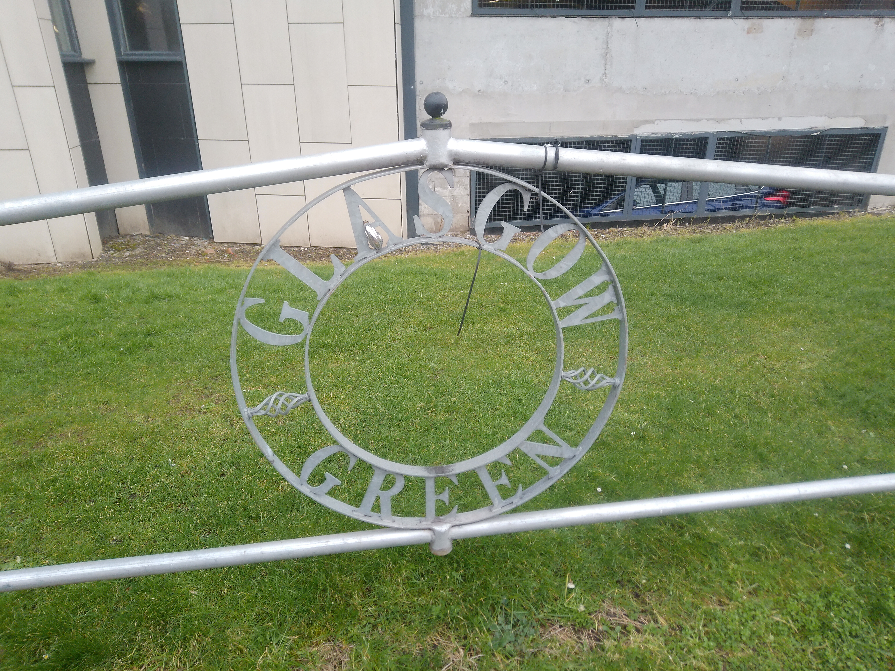
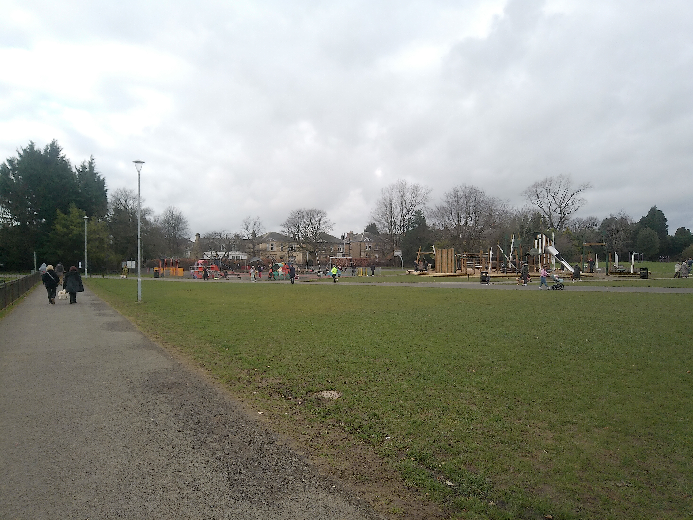
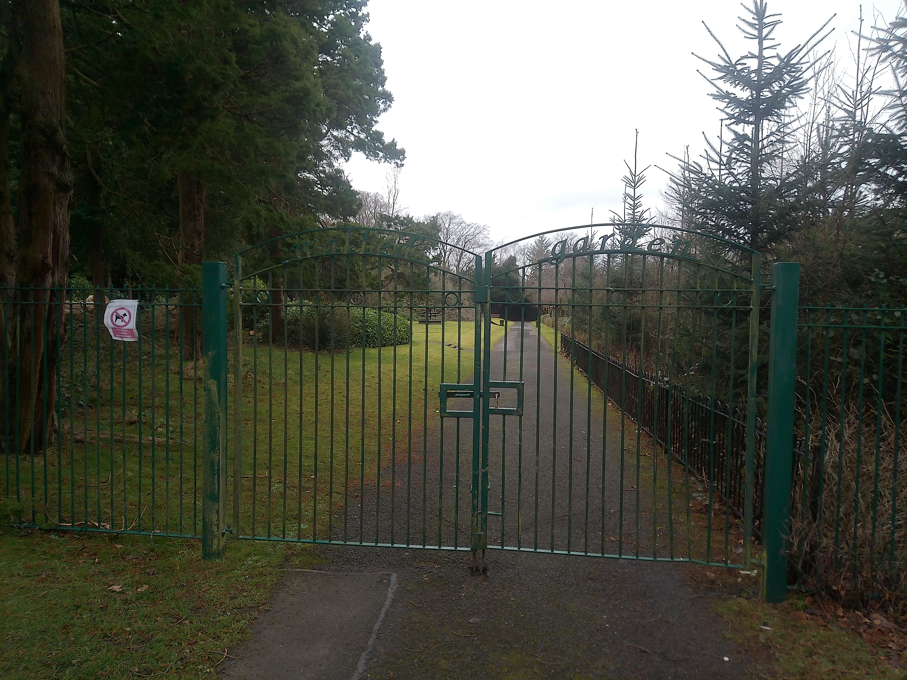
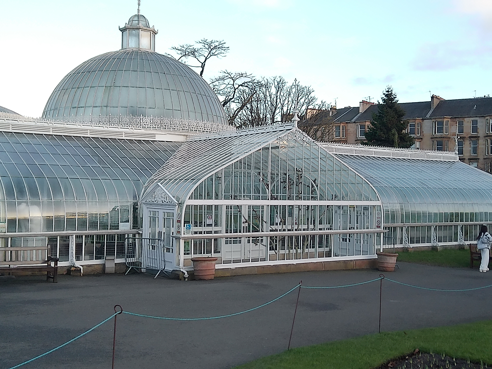
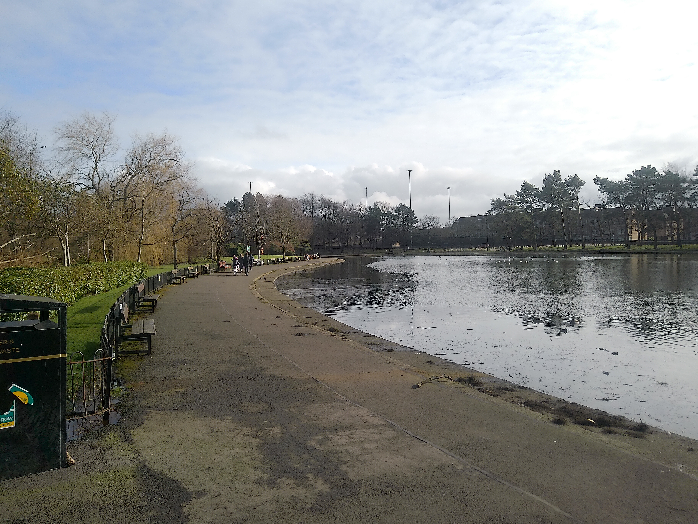

Glasgow Green

Opening Times: Open 24 hours daily
Activities: Play village, event space, footpaths, orienteering course, Clyde viewing platform, Picnic Area, Glasgow Green Football Centre, Peoples Palace, Winter Gardens, Free wheel north cycling track.
Location: Greendyke St, Saltmarket, Glasgow G1 5DB
Glasgow Green is a 135 acre site, it is one of Glasgow's oldest parks. It was gifted to Glasgow in 1450 by Bishop Tumbull who gave the land to the people of Glasgow. No on-site parking so bus or train recommended.
Barshaw Park

Opening Times: 7am - 9:30pm daily
Activities: Model traffic area, play areas, outdoor gym equipment, walled garden, BMX park, gold course, model railway, Yachting pond, Picnic areas, Cafe.
Location: Paisley, Glasgow
Barshaw park is a 55 Acre site for the people of Paisley, it was founded in 1912 after being bought from the Arthur family. Has on-site parking, travel by car, train or bus.
Rouken Glen

Opening Times: Open 24 hours daily
Activities: Ice cream and catering vans, Picnic areas, Walled Gardenm Skate park, Tennis court, Basketball court, outdoor gym, bouncy castles, Garden Centre.
Location: Rouken Glen Rd, Giffnock, East Renfrewshire, G46 7UG
Rouken park is a 143 acre site, opened in 1906 by the East Renfrewshire council but the area has history dating all the way back to 1530. Has on-site parking, travel by car, train or bus recommended.
Glasgow Botanic Gardens

Opening Times: 10am - 3:45PM daily
Activities: Tea room, Picnic benches, Kibble palace, hothhouses, Children's playpark, Herb garden, Food stuck, Sculptures, Free tours (11am-2pm), Heritage trail, Riverside walks and woodland copes.
Location: 830 Great Western Rd, Glasgow, G12 0UE
Botanic Gardens is an 8 acre park and was founded in 1817 by Thomas Hopkirk a distinguished botanist. the area has no on-site parking but there should be places to park nearby, travel by bus, train and car recommended.
Victoria Park

Opening Times: Open 24 hours daily
Activities: Orienteering course, Model yatching pond, Children's play area, Tennis court, Fossil grove, Extensive gardensm Picnic areas, Food trucks.
Location: Victoria Park Drive, Whiteinch, Glasgow G14 9QR
Victoria Park is a 50 Acre park founded in 1899 by the Calgary and District Agricultural Society who named the Park after the Queen at the time Queen Victoria. Has no on-site parking, travel by bus or train recommended.